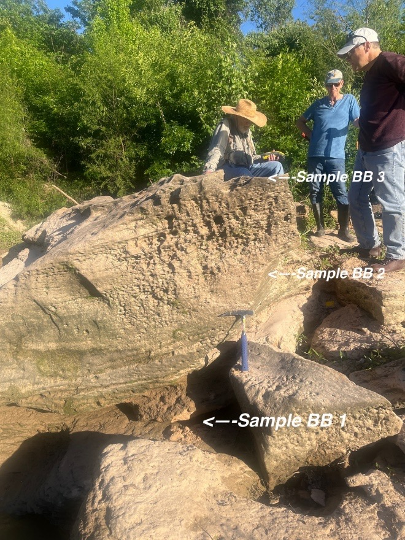

Thin Section Analysis
Petrographic thin sections from Buffalo Bayou outcrop samples
About Thin Sections
Thin sections are slices of rock cut thin enough (typically 30 micrometers) to allow light to pass through, enabling detailed examination of mineral composition, texture, and fabric under a polarizing microscope. These thin sections were prepared from samples collected along Buffalo Bayou to help characterize the sedimentology and diagenesis of the Beaumont Formation.
Conclusions
High-level conclusions
At a very high level, the thin section analysis indicates that the Buffalo Bayou outcrops are composed primarily of sublitharenite to litharenite sandstone with a carbonate cement. Where each facies sits on the QFL (Quartz, Feldspar, Lithics) diagram from Folk (1980) is shown below:

See published paper for detailed conclusions
For a detailed analysis of the thin sections and their implications for the geology of Buffalo Bayou, please refer to the associated publication: Patterson, P., Kendall, J., Schwartz, A., Novello, J., Gaston, W., Lang, R., West, D., Gosses, J., & Wachtman, C. (2025). Sedimentology, Sequence Stratigraphy, Diagenesis, and Paleogeographic Reconstruction of the Beaumont Formation, Late Pleistocene, Buffalo Bayou, Houston, Texas. Houston Geological Society Bulletin, June 2025. [PDF]
Where were these sampled from?
These thin sections were made from rock samples collected at the woodway outcrops along Buffalo Bayou in Houston, Texas just downstream from the kayak put-in at that location.
Initially, a hand sample was examined and described before thin sections were prepared for detailed analysis.
A sample of lithified sandstone weighing approximately 32 g was taken from the same level as the BB 3.

The sample was submerged in 100 ml of distilled white vinegar of nominal acidity of 5% for about 2.5 hrs with the goal of obtaining some disaggregated sediment and performing measurements and observations using a 3x hand lens. The submerged sample displayed intense bubbling (see video) indicating that the cement is Calcium Carbonate (Calcite). After 2.5 hrs elapsed, the remaining lithified sample and the disaggregated sediment was drained and washed with distilled water. After drying the disaggregated sample was weighed. The following table summarizes the weights before and after the acid bath.
| Measurement | Value |
|---|---|
| Initial Dry Sample Weight | 32 g |
| Aggregated after acid bath | 23 g |
| Disaggregated sediment after acid bath | 6 g |
| Calculated dissolved cement | 3 g |
The following observations of the disaggregated sediment were made under a 3x hand lens:
- Sediment appears tan in color
- Composed of Very Fine Sand (0.063-0.125 mm) (Wentworth, 1922)
- Mostly Quartz with some rare dark to black accessory mineral grains
- Occasionally some of the dark grains appear to be oxidized (red coloration)
- The grains appear well rounded and well sorted
BB3 Thin Section Analysis
Detailed petrographic observations & analysis of the BB3 sample location.
Buffalo Bayou Thin Sections - BB3
Other Thin Section Samples
Petrographic observations & analysis of thin sections from other sample locations along Buffalo Bayou.
Buffalo Bayou Thin Sections - Other Samples
Example Thin Section Video
Video footage showing thin section examination using microscope under polarized light - from sample BB3
Microscope Video: File IMG_7157.mp4 from sample BB3
Raw Video and Images Per Sample Location
Browse raw microscope images and videos from each sample location. These images and videos are sometimes also in the analysis section above. Select a sample from the dropdown to view its media.
Original .MOV files were converted to .MP4 files to ensure compatibility with most web browsers. Not all images of thin-sections in the associated paper were in the data archive folder, possibly a mistake related to multiple rounds of thin-sections.
Select a sample location to view images and videos.